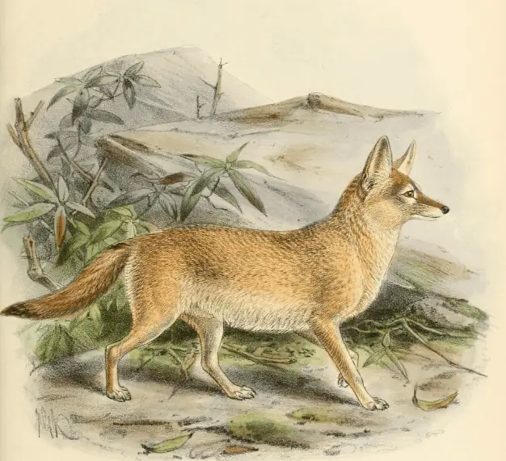

The pale fox ranges from the Atlantic Ocean to the Red Sea, living in countries like Mauritania, Chad, Sudan, and Eritrea.
Unlike most fox species that are omnivorous, the pale fox is an insectivorous species, meaning they eat mostly invertebrates. They eat beetles, grasshoppers, and scorpions. They occasionaly consume gerbils, birds, eggs, and lizards, whilst rarely eating fruits and berries.
The pale fox is one of the least studied canines, due to its camoflauged coat and harsh climate it lives in.

Photo by unknown from unknown